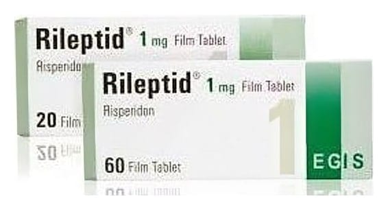

Rileptid 1 mg Film Kaplı Tablet, 30 Adet

Ne için kullanılır
KT · Bölüm 1• RİLEPTİD etkin madde olarak her bir film kaplı tablette 1 mg risperidon içerir. • RİLEPTİD 1 mg film kaplı tablet beyaz ya da beyaza yakın, oblong, bir tarafı 1 işaretli, diğer tarafı çentikli* film kaplı tablettir. *Çentik eşit doza bölmek için değil, sadece yutmayı kolaylaştırmak için kırmaya yardımcı olur. Her ambalajda 20, 30 veya 60 adet tablet bulunur. • Hayvansal kaynaklı laktoz monohidrat (sığır kaynaklı) içerir. • RİLEPTİD antipsikotikler olarak adlandırılan ve bir çeşit ruhsal bozukluk (psikoz) durumunda kullanılan ilaç grubuna dahildir. • RİLEPTİD aşağıdaki durumların tedavisinde kullanılmaktadır. • Halüsinasyon (olmayan bir şeyi görmek, işitmek veya hissetmek), kuruntu, zihin karışıklığı, saldırganlık, aşırı şüphecilik (paranoya), duygusal ve sosyal çekingenlik gibi düşünce, duygu ve/veya davranışlarınızı etkileyen durumların tedavisinde kullanılır. RİLEPTİD, ayrıca bu durumdaki kişilerin hissettiği ruhsal çöküntü, suçluluk duygusu, endişe ve gerginlik gibi belirtileri azaltır. • Bozulan ruhsal durumun dengelenmesi için kullanılır [ani gelişen ve uzun süreli rahatsızlıklarda; bipolar bozuklukta (ruhsal durumdaki zıt yönlü değişiklikler) gözlenen taşkınlık nöbeti belirtilerinin kontrol altına alınmasında; agresif veya diğer yıkıcı davranışların ön planda olduğu davranış ve diğer yıkıcı davranış bozukluklarının tedavisinde; çocuklarda ve ergenlerde otistik bozukluğa bağlı huzursuzlukların (agresif belirtiler, kendine zarar verme, öfke nöbetleri, ani duygu durum değişiklikleri) tedavisinde].